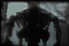

PDQ: It seems that, from what I have seen, we haven't
gotten past the point of creating simulations of artificial life. When I
think ahead to the future, I begin to wonder what will happen when we are
actually able to create new life forms. Are there any moral issues related
to the use/creation of artificial life?
PDQ: It seems that, from what I have seen, we haven't
gotten past the point of creating simulations of artificial life. When I
think ahead to the future, I begin to wonder what will happen when we are
actually able to create new life forms. Are there any moral issues related
to the use/creation of artificial life?
KER: As we start to get into the higher forms of artificial life there may
be some moral issues involved. I think morality in a sense really grows
out of our understanding of human pain. Our understanding and philosophy
of morality grow out of our being able to project and sense what other people
are feeling. Perhaps, as artificial life reaches higher and higher levels
of intelligence, maybe it will make us reflect back upon ourselves. But
again I sort of doubt it. The increasing mechanization of the world doesn't
appear to make us more moral at all. In fact, at this juncture, it seems
to make us less so. In the list of questions you faxed to me, you asked
if television was artificial life? That sort of relates to what I want to
say about that. I think TV is a very good example of a kind of one way connective
image disemenator. It's a crude one directional neural net which has moral
implications, because it effects behavior and it effects behavior for the
masses in a negative way. I'll never forget reading that people perceive
the world to be a lot more dangerous than it actually is because producers
have found that showing multiple murders on TV somehow compels you, it raises
your blood level. It manipulates our physiology in a kind of rubbernecking
reflex. We'll buy more products. But in the mean time, TV is subtly changing
the way our children see the world, and the way we see the world. It is
creating the world and our perception all in one. So for me, this is very
immoral. It's an immoral use of a technology that has and intrinsic power
to inform, to make human beings better, to allow them to help each other.

PDQ: In some sense, television almost has a life of it's own now. It
seems that there is very little control on either end. It kind of drives
itself. When I was thinking about that question I was thinking about television
as an analogy to artificial life. Like reproduction, TV has this kind of
insidious way of reproducing itself. And it's the hype around TV that creates
that.
KER: I like Paul Verilio's analogy of these commercial songs being a kind
of ideational virus. You find yourself sitting sometime and suddenly this
little ditty shows up in your head. It's like you can't get this ditty out
of your head because the TV has somehow managed to plant it so successfully
in our brains. That's an odd form of artificial life, isn't it?
PDQ: It sounds like your describing some sort of parasite.
KER: Yes it is. exactly. It's like a parasite. It's a form of virus. And
it doesn't inform us like we were all told TV was going to do. It infects
us. Like a virus.